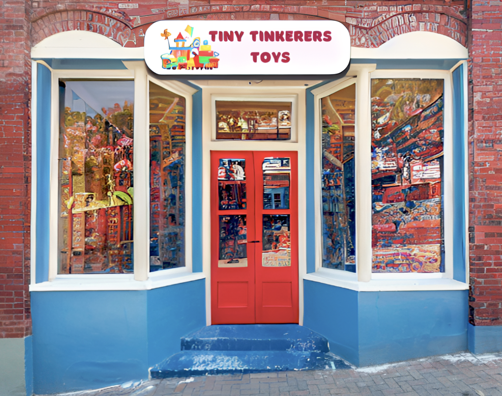

Welcome to Tiny Tinkerers Toys!
At Tiny Tinkerers Toys, we're more than just a toy store. We are a place where childhood memories come to life and where the magic of toys knows no bounds. Our story is one of passion, nostalgia, and a deep love for all things playful.
Our journey started on a quaint street in Somerville, Massachusetts, back in 2022. It all began with a group of Tufts University students who had a dream of bringing joy to children and adults alike after being inspired by a class project through a carefully curated collection of toys. We wanted to create a haven where kids and the young at heart could explore, dream, and celebrate the simple joy of play.
From kids' toys that spark creativity and learning to vintage toys that evoke cherished memories of days gone by, our store is a treasure trove of wonder and excitement. We also cater to collectors, offering a unique selection of collectibles that span various interests and eras.
We invite you to visit our store at 46 White St, Somerville,
MA 02144, and embark on a journey through time and imagination.
Explore the wonders of our world, relive your fondest memories,
and create new ones with the next generation.
Thank you for being a part of Tiny Tinkerers Toys' story.
We look forward to being a part of yours.